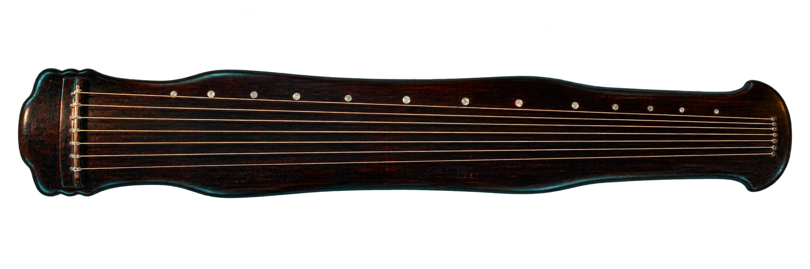

THE LISTENING GARDEN
Different roofs.
The same sky.
Three places. Three voices.
A little room for your own rhythm.
CHINA · 缘
Golden
courtyard
Warm bronze tones beneath golden eaves. Brush a passing thought into the wind.
THE VOICE OF BRONZE絲 THE SILK COLLECTION
A thousand stories.
A single string.
古琴 · Гуцинь
Guqin
Quiet, resonant and unhurried. Seven strings for a conversation with yourself.

Brush across the seven strings. Or play A S D F G H J.
習 A MOMENT TO LEARN
Small gestures.
Beautiful beginnings.
Find your first notes in the garden.
Meet the strings.
Tap a string or use A S D F G H J. Each string has its own voice. Background music can stay off.
GUQIN Seven open strings · C D F G A C D01 / 04
In Silk: slide along a string to change pitch. Try Harmonics on the guqin for a bell-like tone.